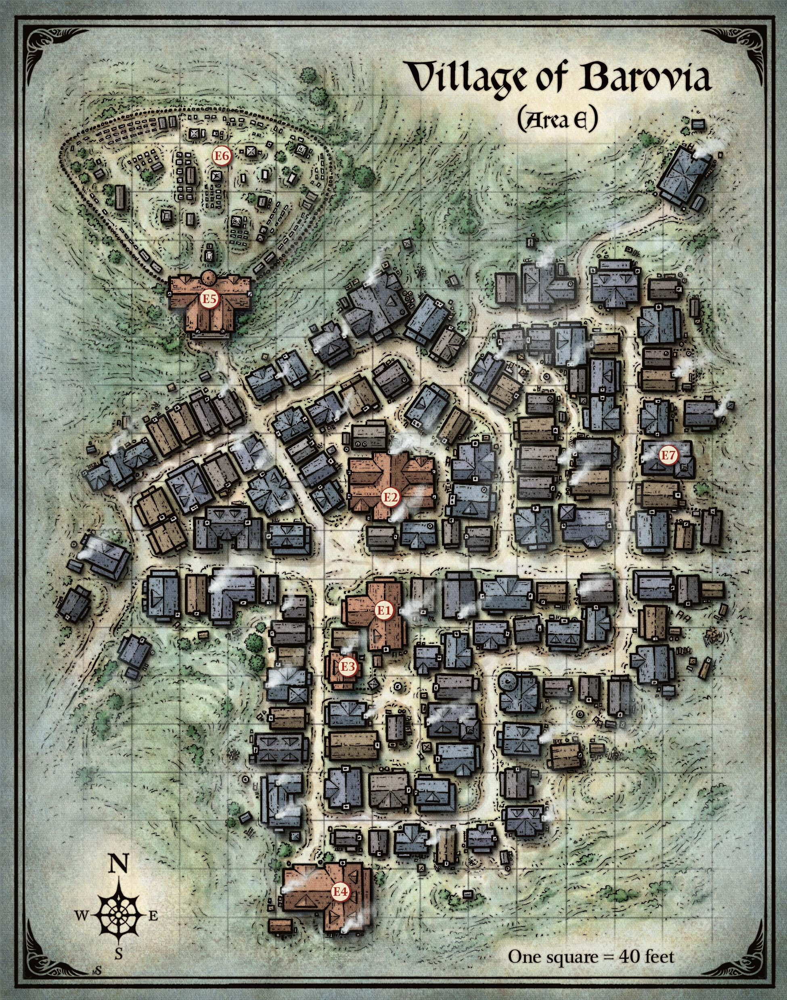
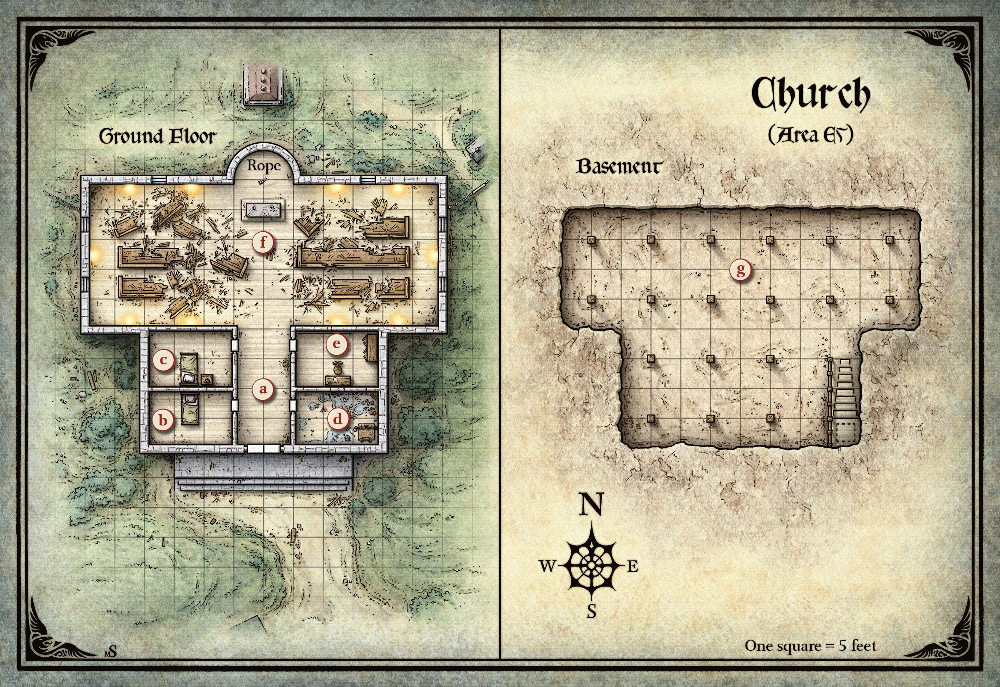

바로비아 마을(Village of Barovia)은 이 땅에서 가장 슬픈 곳으로, 주민들은 스트라드(Strahd)를 너무나 두려워한 나머지 집 밖으로 좀처럼 나오지 않는다. 마을은 레이븐로프트 성(Castle Ravenloft)의 그늘 아래 놓여 있으며, 안개에 파묻혀 있지만 그래도 뱀파이어의 시선을 피할 수는 없다.
최근까지 스트라드는 마을 촌장의 양녀 이레나 콜리아나(Ireena Kolyana)를 밤마다 찾아오곤 했다. 이레나는 스트라드가 사랑했던 타티아나(Tatyana)의 영혼을 지니고 있으며, 외모도 그녀와 꼭 닮았다. 스트라드는 이레나를 자신의 신부로 삼아 뱀파이어로 만들고, 영원히 성의 지하 납골당에 가두려 한다.
"같은 목소리, 같은 얼굴, 같은 우아한 몸. 그녀는 타티아나가 되살아 돌아온 것이었다. 나는 경악에 넋을 완전히 잃고 말았다."
— 스트라드 폰 자로비치(Strahd von Zarovich),
《나, 스트라드: 뱀파이어의 회고록(I, Strahd: The Memoirs of a Vampire)》 中
키 큰 형체들이 모든 것을 감싸는 짙은 안개 속에서 어렴풋이 나타난다. 발밑의 질퍽한 땅이 매끄럽고 젖은 자갈길로 바뀐다. 키 큰 형체들이 마을 가옥임을 알아볼 수 있게 된다. 각 집의 창문은 칠흑 같은 어둠 속에서 응시하고 있다. 멀리서 메아리치는 슬픈 흐느낌 외에는 적막을 깨는 소리가 없다.
흐느낌은 미친 메리(Mad Mary)의 연립 주택(구역 E3)에서 흘러나온다. 구역 E1과 E2를 제외하고 마을의 모든 상점은 영구히 문을 닫았으며, 비어 있는 상점들은 가치 있는 것은 모두 약탈당했다. 대부분의 벽에 발톱 자국이 나 있다.
안개가 결국 걷히면, 레이븐로프트 성이 하늘을 꿰뚫는 창처럼 마을 위에 우뚝 솟아 있다.
| d20 | 점유자 |
|---|---|
| 1–3 | 없음 |
| 4–8 | 2d4 쥐 떼(swarms of rats) |
| 9–16 | 바로비아 마을 주민 |
| 17–20 | 2d4 스트라드 좀비(부록 D 참조) |
쥐. 쥐가 들끓는 집은 버려진 것처럼 보인다. 쥐들은 스트라드의 하수인이며, 캐릭터들이 집 내부를 탐색하면 공격한다.
바로비아 마을 주민. 바로비아 마을 주민이 사는 집에는 1d4명의 성인(남녀 인간 평민(commoner))과 1d8 − 1명의 아이(남녀 비전투원)가 있다. 문 앞에서 귀를 기울이면 안에서 낮고 웅얼거리는 속삭임이 들린다. 이 주민들은 낯선 이와 대화할 생각이 없으며 절대 먼저 공격하지 않고, 가능한 한 항상 위험을 피해 도주한다. 밤에는 촛불 곁에 웅크리고 앉아 손수 만든 성물을 가까이 쥐고 있다.
스트라드 좀비. 캐릭터들이 스트라드 좀비가 들끓는 집의 문이나 덧문을 열면, 죽음의 악취가 덮친다. 캐릭터들이 감히 들어가면, 좀비들이 그 위치로 모여든다.

이 건물에서 새어 나오는 빈약한 빛이 두꺼운 커튼 뒤에서 흘러나온다. 경첩에 매달려 삐걱거리는 간판에는 "빌드라스의 잡화점(Bildrath's Mercantile)"이라고 적혀 있다.
이 가게는 길이 70피트, 폭 40피트이다. 주인 빌드라스 칸테미르(Bildrath Cantemir, LN 남성 인간 평민(commoner))는 플레이어 핸드북의 모험 장비 표에 있는 물품을 판매하지만, 표에서 25 gp 미만인 물품만 취급하며, 가격은 열 배를 받는다. 빌드라스는 비스타니(Vistani)가 지나갈 때 그들과 거래한다. 그는 또한 이곳에 발을 들인 불운한 외지인에게서 이익을 챙기는 것을 기꺼이 한다. 그는 자신의 이익만 챙기며 피난처를 제공하지 않는다. 그의 말마따나 "진짜 원하면 값을 치르겠지"라며 절대 흥정하지 않는다. 마을에 경쟁자가 없다.
캐릭터들이 빌드라스를 곤란하게 하면, 그는 조카이자 물건 나르는 일꾼인 패리윔플(Parriwimple, LG 남성 인간)을 부른다. 패리윔플은 검투사(gladiator)의 능력치를 가지고 있지만, 지능이 6이며 방패를 들지 않는다(AC 14). 패리윔플의 본명은 파르폴 칸테미르(Parpol Cantemir)이지만, 마을에서 그렇게 부르는 사람은 아무도 없다. 가죽 튜닉 아래로 물결치는 근육이 그의 힘을 충분히 짐작하게 해준다. 동시에, 패리윔플은 단순한 마음씨를 가졌다. 그는 삼촌에게 헌신적이며, 빌드라스가 뭐라고 할 것이 있는 한 캐릭터들을 따르지 않는다.
한 줄기 빛이 중앙 광장에 쏟아져, 짙은 안개 속에서 마치 단단한 기둥처럼 보인다. 벌어진 출입구 위에 간판이 위태롭게 비뚤어져 매달려 있으며, 이곳이 "피 위의 포도주(Blood on the Vine)" 선술집임을 알린다.
선술집 건물은 대략 60피트 사각형이다. 간판을 자세히 살펴보면 원래 "피의 포도주(Blood of the Vine)"라고 적혀 있었음을 알 수 있다. ("f" 위에 "n"이 긁혀 덮어써져 있다.) 한때 잘 꾸며졌던 이 선술집은 세월이 흐르며 초라해졌다. 난로에서 활활 타는 불이 안에 웅크린 몇몇 사람들에게 미미한 온기를 준다. 그들 중에는 바텐더, 함께 앉은 세 명의 비스타니, 그리고 이스마르크 콜리아노비치(Ismark Kolyanovich)라는 남자가 있다—마침 마을 촌장 콜리안 인디로비치(Kolyan Indirovich)의 아들이다.
바텐더 아리크(Arik the Barkeep). 아리크(CN 남성 인간 평민(commoner))는 아무 생각 없이 잔을 닦으며 바를 지킨다. 작은 와인잔 1 cp, 주전자 1 sp.
세 명의 비스타니. 알렌카(Alenka), 미라벨(Mirabel), 소르비아(Sorvia)라는 이름의 세 비스타니 첩자(spy)(N 여성 인간)가 선술집을 소유하고 있다.
고요하고 잿빛인 거리에 신음 섞인 흐느낌이 떠다니며, 당신의 생각을 슬픔으로 물들인다. 그 소리는 어두운 2층짜리 연립 주택에서 흘러나온다.
이 집은 대략 40피트 사각형이며, 안쪽에서 판자로 막고 바리케이드가 쳐져 있다. 미친 메리(Mad Mary, CN 여성 인간 평민(commoner))는 2층 침실 바닥 한가운데 앉아 기형적인 인형을 움켜쥐고 있다. 그녀는 슬픔과 절망에 빠져 있다. 방에 누가 있는지 거의 인식하지 못한다. 분노가 있는 곳에서는 아무 말도 하지 않지만, 부드럽게 말을 건네는 사람에게는 더듬거리며 이야기한다.
메리는 사랑하는 딸 게르트루다(Gertruda)를 이 집에 평생 숨겨 두었다. 이제 십대가 된 게르트루다는 일주일 전 집을 빠져나갔으며, 그 이후 보이지 않는다. 어머니는 최악을 두려워하고 있으며—그 두려움에는 정당한 이유가 있다. 게르트루다의 운명에 대한 자세한 내용은 제4장의 구역 K42를 참조하라.
기형적인 인형은 이상한 비웃음을 띠고 있으며 삼베 원피스를 입고 있다. 이 인형은 메리가 어렸을 때 가지고 있던 것으로, 게르트루다에게 물려주었다. 발라키의 장난감 제작자 가도프 블린스키(Gadof Blinsky)(제5장, 구역 N7 참조)가 이 인형을 만들었다. 인형 원피스 밑단에 헤진 태그가 꿰매져 있으며, "재미 없으면, 블린스키 아니다!(Is No Fun, Is No Blinsky!)"라고 적혀 있다.
지친 모습의 저택이 녹슨 철제 울타리 뒤에 웅크리고 있다. 철문은 뒤틀리고 찢겨져 있다. 오른쪽 문은 옆으로 내던져져 있고, 왼쪽 문은 바람에 느릿느릿 흔들린다. 문의 더듬거리는 삐걱임과 쨍그랑 소리가 무심한 정확함으로 반복된다. 잡초가 정원을 뒤덮고 집 자체를 위협하듯 다가서 있다. 그러나 벽을 따라 자란 것들은 짓밟혀 주변을 도는 길이 나 있다. 무거운 발톱 자국이 한때 아름다웠던 벽의 마감을 벗겨 놓았다. 커다란 검은 자국들이 저택을 덮쳤던 화염을 말해준다. 어떤 창에도 유리 한 장, 파편 하나 남아 있지 않다. 모든 창은 판자로 막혀 있으며, 각각에 불길한 징조의 얼룩이 져 있다.
정원을 조사하는 캐릭터는 DC 11 지혜(지각) 판정에 성공하면, 저택 주위의 밟힌 잡초와 수많은 늑대 발자국 및 인간의 발자국을 식별할 수 있다. 이 발자국은 스트라드의 지배 아래 있는 좀비와 구울이 남긴 것이다.
촌장의 양녀 이레나 콜리아나(LG 여성 인간 귀족(noble), 14 히트 포인트)는 저택 안에 있으며, 문 밖의 사람들이 스트라드에게 충성하지 않는다는 확신이 들지 않는 한 단단히 빗장을 건 문을 열어주지 않는다. 캐릭터들이 훌륭한 역할 연기나 DC 15 매력(기만 또는 설득) 판정에 성공하여 그녀를 설득하거나, 이스마르크가 함께 있으면, 이레나는 문을 열고 안으로 초대한다.
저택 내부는 잘 꾸며져 있지만, 비품은 심한 마모의 흔적을 보인다. 눈에 띄는 특이한 점은 판자로 막힌 창문과 모든 방에 있는 성물이다. 촌장은 옆 응접실 바닥에 있다—시든 꽃에 둘러싸인 단순한 나무 관 안에 누워 있으며, 희미한 부패의 냄새가 난다.
이스마르크와 이레나가 직접 관을 만들었다.
레이븐로프트 성을 받치는 기둥 바위의 뿌리에, 완만한 언덕 위에 돌과 나무로 된 회색빛의 처진 건물이 서 있다. 이 교회는 수백 년간 악의 공세를 명백히 견뎌 왔으며, 닳고 지쳐 있다. 뒤쪽으로 종탑이 솟아 있고, 지붕 널빤지의 구멍을 통해 깜박이는 빛이 비친다. 서까래는 무게를 견디며 힘겹게 버티고 있다.
교회의 무거운 나무 문은 발톱 자국으로 뒤덮여 있고 화염에 그을려 있다.
마을 사제 도나비치(Donavich)가 이곳에 살고 있다. 다른 바로비아인들은 곧 명백해질 이유로 이 교회를 기피한다.

문이 열리면 폭 10피트, 길이 20피트의 복도가 밝게 빛나는 예배당으로 이어지는 것이 보인다. 복도는 조명이 없으며 곰팡이 냄새가 진동한다. 복도 양쪽에 두 개씩, 총 네 개의 문이 인접한 방으로 통한다. 예배당에 잔해가 흩어져 있는 것이 보이고, 안에서 기도를 읊조리는 부드러운 목소리가 들린다. 갑자기, 나무 바닥 아래에서 올라오는 비인간적인 비명이 기도를 삼켜 버린다.
비명은 교회의 지하 묘실(구역 E5g)에서 나온다. 부드러운 목소리는 도나비치의 것이다.
이 더럽고 빛이 없는 방에는 짚을 채운 매트리스가 깔린 나무 침대가 있다. 침대 머리판 위에 나무 성물이 걸려 있다.
이 방은 한때 도나비치의 아들 도루(Doru)의 것이었으며, 도루는 지하 묘실(구역 E5g)에 갇혀 있다. 1년 넘게 사용되지 않았으며 가치 있는 것은 없다.
이 더러운 방에는 짚을 채운 매트리스가 깔린 나무 침대가 있고, 그 옆에 밝게 타오르는 기름 램프가 놓인 작은 탁자가 있다. 침대 머리판 위에 나무로 된 태양 모양 성물이 걸려 있다.
이곳은 도나비치의 방이며 가치 있는 것은 없다.
세월과 방치가 이 곰팡이 핀 방의 천장에 구멍을 냈으며, 부서진 지붕 널빤지 몇 조각과 물웅덩이가 있다. 한쪽 구석, 바닥에 박힌 무거운 나무 다락문이 사슬과 자물쇠로 잠겨 있다. 문 너머로 젊은 남자의 고통스러운 비명이 들린다.
도나비치는 철제 자물쇠의 열쇠를 잃어버렸다. 사슬을 제거하고 다락문을 열면, 지하 묘실의 비명이 멈춘다. 다락문은 뒤틀려 틀에 끼어 있어, DC 12 근력 판정에 성공해야 열 수 있다. 아래에는 지하 묘실(구역 E5g)로 15피트 내려가는 나무 계단이 있다.
남쪽 벽에 낡은 책상과 의자가 놓여 있고, 그 위에 나무 성물—태양 문양—이 걸려 있다. 북쪽 벽에는 10피트 길이의 철봉이 걸려 있지만 비어 있어, 한때 태피스트리가 걸려 있었음을 짐작하게 한다. 맞은편 벽에는 네 개의 키 큰 문이 달린 나무 캐비닛이 서 있다.
빈 나무 헌금함이 의자 좌석 위에 놓여 있다. 책상 서랍에는 빈 양피지 몇 장과 깃펜 두어 개, 말라붙은 잉크병이 들어 있다. 크기에 비해 나무 캐비닛에는 거의 아무것도 없다. 안에는 부싯깃통, 양초가 들어 있는 나무 상자 몇 개, 그리고 많이 사용된 책 두 권이 있다: 아침의 군주(Morninglord)에게 바치는 성가집 《새벽의 찬가(Hymns to the Dawn)》와 《진실의 칼날: 울미스트 종교재판이 수행한 악마론 이단에 맞선 전쟁에서의 논리의 활용(The Blade of Truth: The Uses of Logic in the War Against Diabolist Heresies, as Fought by the Ulmist Inquisition)》이다.
예배당은 엉망진창이며, 뒤집히고 부서진 긴 의자들이 먼지 낀 바닥에 흩어져 있다. 촛대와 샹들리에에 꽂힌 수십 개의 양초가 먼지 낀 구석구석을 열성적으로 밝혀 그림자를 몰아내려 한다. 교회의 저편에 발톱 자국 난 제단이 있고, 그 뒤에 더러운 제의를 입은 사제가 무릎을 꿇고 있다. 그 옆에 종탑까지 뻗은 길고 굵은 밧줄이 걸려 있다. 예배당 바닥 아래에서 젊은 남자의 목소리가 외친다, "아버지! 배가 고파요!"
도나비치(Donavich, LG 남성 인간 수행사제(acolyte))는 밤새 기도해 왔다. 그의 목소리는 쉬고 약해져 있다. 한마디로, 그는 미쳐 있다. 1년 조금 넘게 전, 스무 살인 아들 도루와 다른 마을 주민 몇 명이 먼 나라에서 바로비아로 온 검은 로브의 마법사에게 이끌려 레이븐로프트 성을 습격했다(제2장, 구역 M 참조). 모든 기록에 따르면, 마법사는 스트라드의 손에 죽었고, 도루도 그리되었으나—뱀파이어 스폰(vampire spawn)이 되어 아버지에게 돌아왔다. 도나비치는 아들을 교회의 지하 묘실에 가둘 수 있었고, 도루는 오늘까지 그곳에 남아 있다. 도루는 감금된 이후 한 번도 피를 먹지 못했으며, 밤낮없이 아버지에게 울부짖는다. 한편, 도나비치는 밤낮으로 기도하며 도루를 파괴하지 않고 구할 방법을 신들이 알려주기를 바라고 있다.
캐릭터들이 도루를 죽이려는 듯하면, 도나비치는 최선을 다해 막으려 한다. 도루가 죽으면, 도나비치는 바닥에 쓰러져 위로받을 수 없이 울며 절망에 빠진다.
교회의 지하 묘실은 거칠게 깎은 벽과 축축한 진흙과 흙으로 된 바닥을 가지고 있다. 썩어가는 나무 기둥들이 나무 천장의 무게를 버티며 끙끙댄다. 위 예배당의 촛불이 틈새로 스며들어, 먼 구석에 있는 야윈 형체를 어렴풋이 볼 수 있게 한다.
그 형체는 도루(Doru)로, 도나비치를 괴롭히고 교회를 무너뜨리기 위해 스트라드가 보낸 뱀파이어 스폰이다. 도루는 피에 굶주려 있으며, 혼자 있는 캐릭터를 공격할 만큼 대담하다. 캐릭터들이 무리 지어 접근하면, "너희 피 냄새가 나!" 하고 쉿쉿거리며 최대한 피하려 한다. 퇴로가 막히면, 몸을 내던져 공격한다.
캐릭터들이 도루를 제압하고 피를 약속하거나 파괴하겠다고 위협하면, 혹은 그를 죽인 후 부활시키면, 그는 자신의 몰락에 이른 사건들을 이야기한다(구역 E5f 참조).
카드 리딩에서 보물이 지하 묘실에 있다고 나왔다면, 방의 남서쪽 구석에 있는 곰팡이 핀 낡은 상자 안에 들어 있다. 상자는 잠기지 않았고 함정도 없다.
허물어져 가는 교회 뒤편에 녹슨 문이 달린 연철 울타리가 직사각형 땅을 둘러싸고 있다. 안개에 휩싸인 빽빽한 묘비에 오래전 떠난 영혼들의 이름이 새겨져 있다. 모든 것이 고요해 보인다.
낮 동안 묘지는 고요하고 평화로운 곳이다. 그러나 매일 밤 자정, 유령의 행렬이 벌어진다(아래의 "죽은 자의 행진" 참조).
이 유령의 집은 부록 B "죽음의 집(Death House)"에 설명되어 있다.
매일 밤 자정, 백 명의 영혼이 묘지(구역 E6)에서 일어나 옛 스발리치 도로(Old Svalich Road)를 따라 레이븐로프트 성까지 행진한다.
으스스한 녹색 빛이 묘지를 감싼다. 이 빛에서 유령의 행렬이 나타난다. 대검을 든 당당한 여전사들의 흔들리는 모습, 가느다란 활을 든 숲에 밝은 남자들, 반짝이는 도끼를 든 드워프들, 수염을 기르고 이상한 뾰족한 모자를 쓴 고풍스러운 복장의 마법사들—이 모든 이들과 그 이상이 묘지에서 걸어 나오며, 그 수는 순간마다 불어난다.
이들은 이곳에 묻힌 사람들의 영혼이 아니라, 스트라드를 파괴하려다 죽은 이전 모험자들의 영혼이다. 매일 밤, 유령 모험자들은 자신들의 과업을 완수하려 시도하고, 매일 밤 실패한다. 그들은 산 자에게 관심이 없으며, 맞히거나, 피해를 주거나, 퇴치할 수 없다. 캐릭터들과 대화하지 않는다.
성에 도달하면, 영혼들은 곧장 예배당(구역 K15)으로 가서 높은 탑 계단(구역 K18)을 올라 탑 꼭대기(구역 K59)에 이른다. 그곳에서 납골당(구역 K84) 쪽 수직 통로로 몸을 던지며 사라진다.
이 이벤트는 캐릭터들이 마을을 지나갈 때 발생한다.
축축한 자갈 위를 작은 나무 바퀴가 구르는 소리가 들린다. 외로운 소리의 근원을 따라가면, 넝마를 뒤집어쓴 구부정한 인물이 안개 속으로 삐걱거리는 나무 수레를 밀고 있다.
밤 마녀(night hag)인 모르간사(Morgantha)가 늙은 여자의 모습으로, 늙은 뼈 분쇄기(Old Bonegrinder)에서 마을로 와 꿈 과자(dream pastries)를 개당 1 gp에 판매한다(과자에 대한 설명은 제6장 참조). 그녀는 집집마다 돌아다니며 문을 두드린다. 대부분의 경우 아무도 응답하지 않는다. 누군가 응답하면, 모르간사는 자신의 상품을 팔려 하며, 고객에게 바로비아 일상의 비참함과 절망에서 벗어날 수 있다고 제안한다.
캐릭터들이 잠시 그녀를 미행하면, 그녀가 한 가정에서 루시안 야로프(Lucian Jarov, LG 남성 인간 비전투원)라는 일곱 살 소년의 형태로 대금을 받는 것을 목격한다. 루시안의 부모는 모르간사에게 아들을 데려가지 말라고 애원하지만, 그녀는 울부짖는 아이를 부모의 손에서 낚아채 자루에 넣고, 행상인 수레에 묶은 뒤, 태연하게 늙은 뼈 분쇄기로 돌아간다.
모르간사는 캐릭터들이 외지인임을 알아채고 최대한 피하려 한다. 캐릭터들이 아이를 풀어줄 것을 요구하면, 그녀는 마지못해 응하며, 나중에 언제든 소년을 다시 데리러 올 수 있음을 안다. 그녀는 자기 방어로만 싸우며, 목숨을 살려주는 대가로 다음 정보를 제공한다:
Curse of Strahd — Chapter 3: The Village of Barovia
한국어 번역본